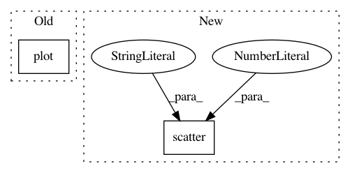

ca60ad3195641ed5c48b00b565f1a4fb97c57431,GPy/plotting/matplot_dep/dim_reduction_plots.py,,plot_magnification,#Any#Any#Any#Any#Any#Any#Any#Any#Any#Any#Any#Any#Any#,202
Before Change
ax.set_aspect("auto") // set a nice aspect ratio
if plot_inducing:
ax.plot(model.Z[:, input_1], model.Z[:, input_2], "^w")
if updates:
fig.canvas.show()
raw_input("Enter to continue")
After Change
if plot_inducing:
Z = model.Z
ax.scatter(Z[:, input_1], Z[:, input_2], c="w", s=18, marker="^", edgecolor="k", linewidth=.3, alpha=.7)
if updates:
fig.canvas.show()
raw_input("Enter to continue")
In pattern: SUPERPATTERN
Frequency: 3
Non-data size: 2
Instances
Project Name: SheffieldML/GPy
Commit Name: ca60ad3195641ed5c48b00b565f1a4fb97c57431
Time: 2015-09-02
Author: ibinbei@gmail.com
File Name: GPy/plotting/matplot_dep/dim_reduction_plots.py
Class Name:
Method Name: plot_magnification
Project Name: IBM/adversarial-robustness-toolbox
Commit Name: 6df9cbf6888fd1482ceeaf4316b60a9714b5ce82
Time: 2017-07-03
Author: valentina.zantedeschi@ibm.com
File Name: demo/draw_boundaries.py
Class Name:
Method Name:
Project Name: NeuromorphicProcessorProject/snn_toolbox
Commit Name: 70c3efbc796b13121395468ca6fe50e5fdc3570e
Time: 2018-02-02
Author: bodo.rueckauer@gmail.com
File Name: snntoolbox/simulation/plotting.py
Class Name:
Method Name: plot_spiketrains